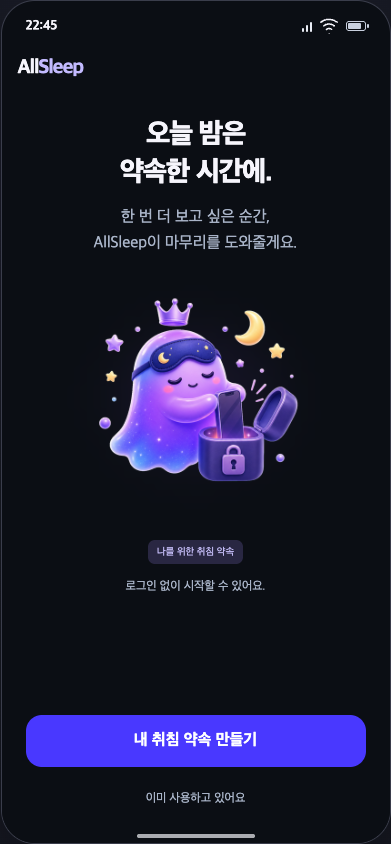
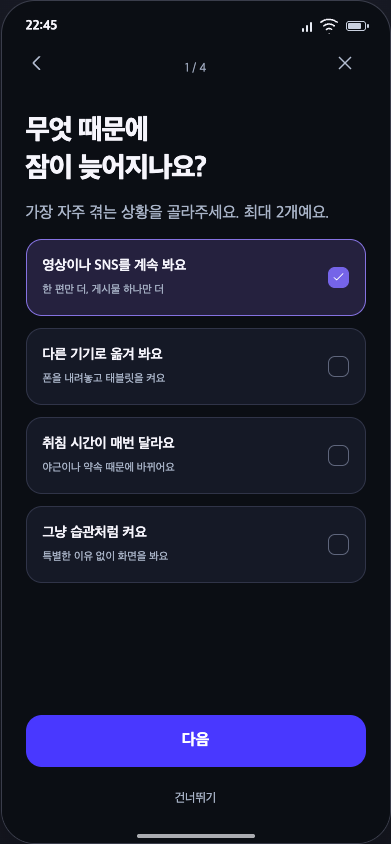
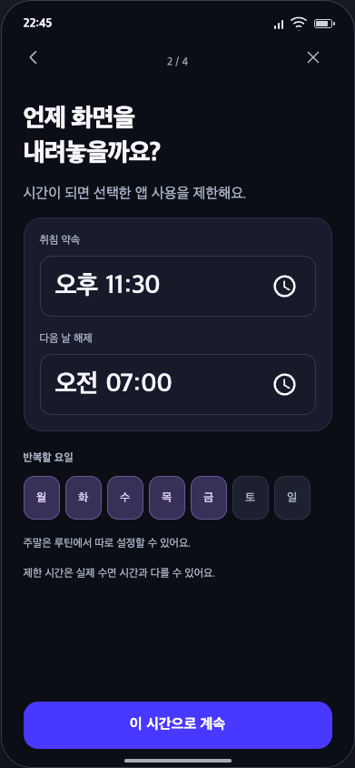
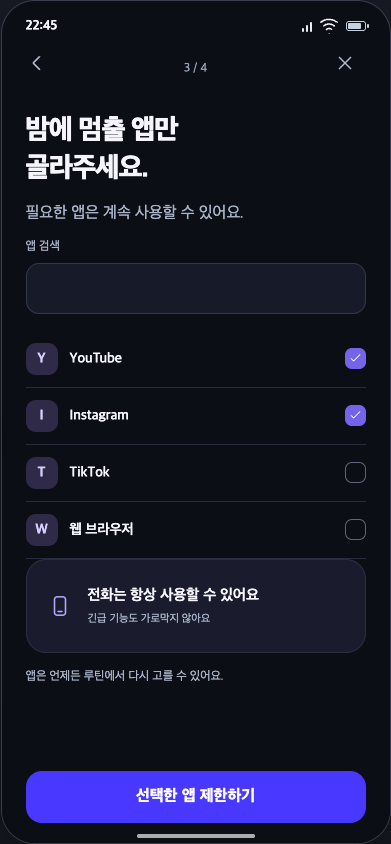
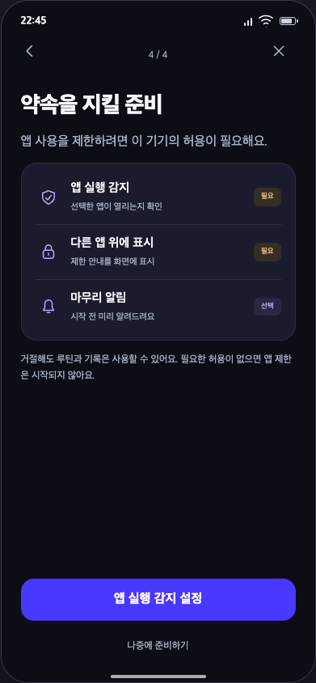
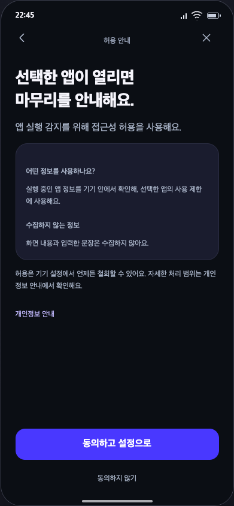
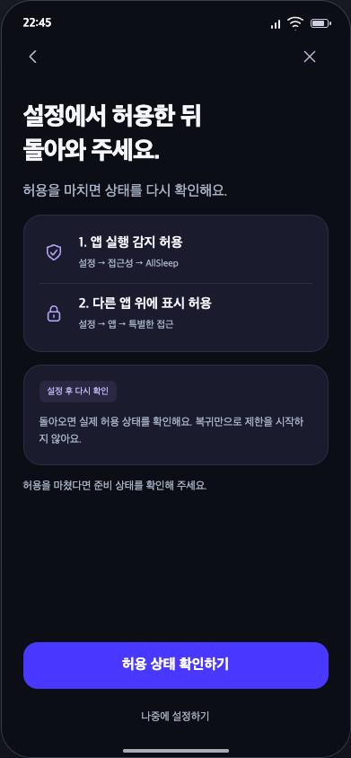
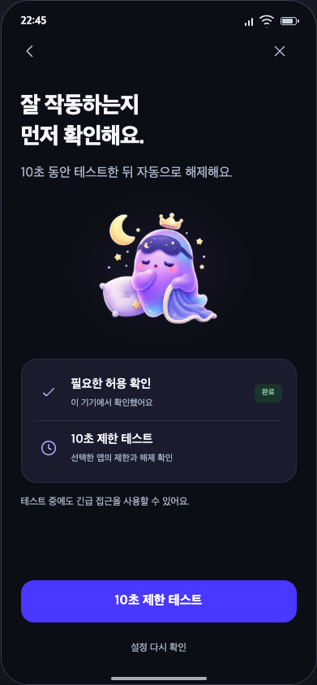
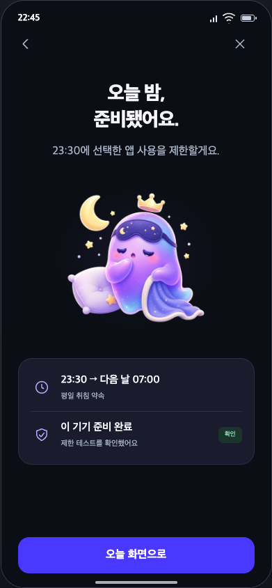
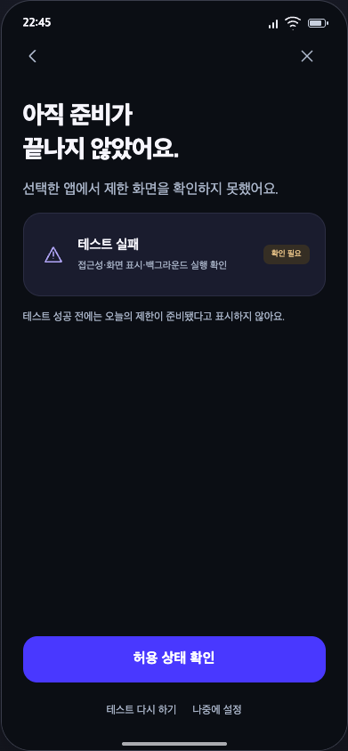

ALLSLEEP / FINAL SCREEN DESIGNS / 01시작하기 · 10개 화면
시간·앱 선택부터 권한 안내와 실제 제한 테스트까지. 로그인 없이 시작합니다.

가치 소개
O01 · 내 취침 약속 만들기
취침 방해 원인
O02 · 다음
취침과 해제 시각
O03 · 이 시간으로 계속
제한 앱 선택
O04 · 선택한 앱 제한하기
권한 준비
O05 · 앱 실행 감지 설정
접근성 별도 고지
O06 · 동의하고 설정으로
시스템 설정 안내
O07 · 허용 상태 확인하기
10초 제한 테스트
O08 · 10초 제한 테스트
첫 준비 완료
O09 · 오늘 화면으로
제한 테스트 실패
O10 · 허용 상태 확인